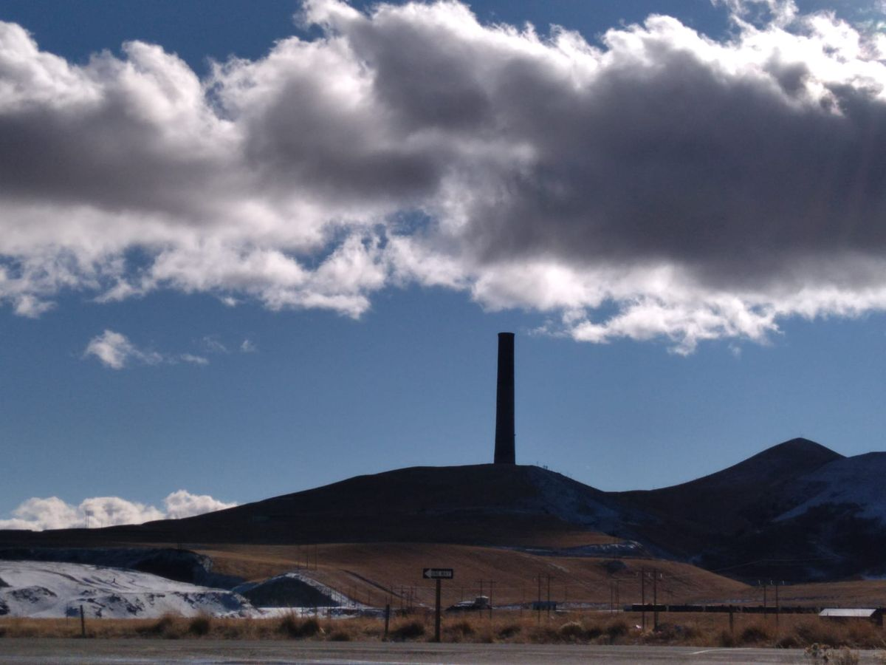
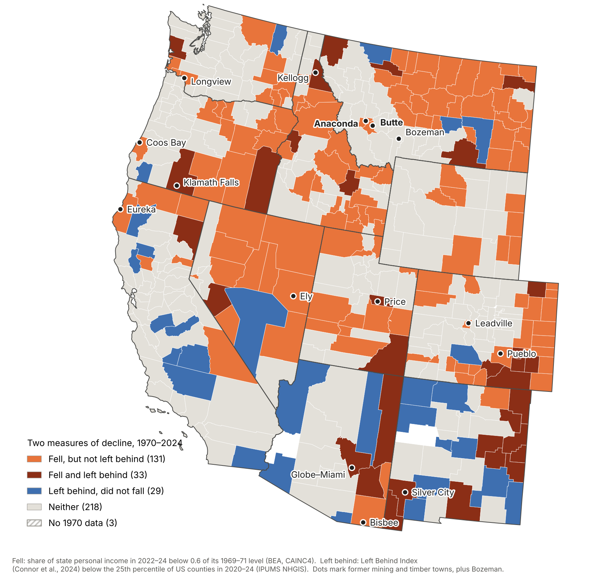

“Falling without being left behind? Copper and the measurement of regional decline in Montana, 1970–2024”
Iker Saitua and Andoni Kortazar
In preparationPlaces can decline without becoming poor.
Across the American West, mining, smelting and timber towns that once anchored their regional economies have lost much of their weight. Yet most of them do not appear on today’s maps of “left-behind places”. Left-Behind West asks why, and what that gap tells us about how regional decline is measured.

Current indices of left-behind places rank counties by income, poverty, unemployment and education at a point in time. They capture disadvantage. They do not capture a place’s loss of position within its regional economy: a fall that can happen while those who remain keep close to average incomes, because many others have left.
In Montana, only four of the 33 counties that lost more than 40% of their share of state income since 1970 are classified as left behind today. Butte, for a century the state’s mining centre, halved its weight but never fell below the 40th percentile of US counties. Across the eleven western states the pattern repeats: of 164 counties that fell, only 33 are left behind.

Iker Saitua and Andoni Kortazar, University of the Basque Country (EHU)
Iker Saitua and Andoni Kortazar
In preparation